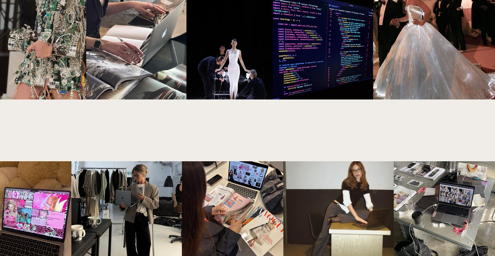

Fashion Tech, Behind the Scenes Funding, opportunities, and challenges in founders’ own words
As AI makes products easier to build and big tech moves in, founders at TRACE, Daydream, Cloud Closet, and Remark say the real battle is for investor confidence, distribution, and user trust.
“We are two best friends with a shopping addiction, so we made it our whole job!”
That’s the slogan Ella Rubin and Katie Pfleger, the co-founders of TRACE, love to repeat. Their fashion tech startup, which recently raised $3 million of venture capital in a seed round, is building a presale marketplace where clothes shoppers, sellers, renters, and buyers come to list, finalize bids from potential buyers, set rental prices, and buy or rent items before an original owner has even shopped them on the market. Using TRACE, they can assess a specific product’s future resale or rental value and consumer demand for it before they even hit checkout.
TRACE made its debut with an elaborate launch party and a successful weekend pop-up at Shopify New York in October. However, a well-marketed public launch, the strategically timed press coverage following it, and an app store rollout do not guarantee TRACE’s success or even survival in the ruthless startup ecosystem that witnesses more losses than wins. Among other challenges, the challenge of educating users about the mechanics of its presale shopping model and then convincing them of its utility to convert them into active users is, perhaps, its biggest.
Like TRACE, other startups in the fashion tech landscape are faced with a multitude of challenges that either persist, are amplified, or displaced by other obstacles post-launch. Building a functional product, finding and reaching target users, gaining investor confidence, and raising capital in a new sector that is yet to produce winners or a unicorn are just some of the struggles of fashion tech founders. Despite these challenges, innovation has not ceased and the fashion tech sector continues to thrive with more and more businesses being launched every day.
While many of the newer fashion tech companies are offering AI-native solutions, the older ones are pivoting to or increasingly branding themselves as being AI-powered. Regardless of whether they are providing users with AI-powered features on an app or a completely AI-first digital platform, fashion tech companies are changing how people think about, view, and consume fashion.
Over the years, the parameters of the fashion tech sector have widened beyond the digital storefronts offered by retailer websites, enabled by the technological advancements of the dot-com era, to include apps and digital platforms populated with thousands of items from catalogs spanning numerous brands that consumers can use to discover, search, try on, buy, resell, rent, and style clothes. The fashion tech applications and web-based platforms of today offer a broad range of services, from AI-powered discovery and shopping, rental, virtual styling and try-on, to generative AI product photography, dynamic visualization, circular fashion, and social and agentic commerce.
The fashion market is massive and harbors immense potential for growth and returns. Investors have taken notice: as of October, fashion tech companies globally have raised $798 million, according to Tracxn.
- Cloud Closet Bootstrapped $20K of the founder’s own money
- Tote Sold to a competitor No figure reported
- TRACE Just launched $3M seed
- Remark B2B, Series A $27M total
- Daydream Investor favorite $50M seed
The five companies in this story sit at very different points in the founder journey. Scroll to see how much money is behind each one.
Caroline Lakshmanan put $20,000 of her own money into Cloud Closet and has been building it since 2023. The startup is bootstrapped and now looking for investors. On this scale, its bar barely registers.
Gordon Li met more than 120 investors for Tote, a business-to-business styling and discovery company, with no real success. He sold Tote to a competitor and joined TRACE as a founding engineer.
Ella Rubin and Katie Pfleger raised a $3 million seed round for TRACE, which launched in October with a pop-up at Shopify New York.
Remark, which builds a styling agent for premium and luxury brands, raised a $16 million Series A in 2025, bringing its total funding to $27 million.
Daydream, founded by Julie Bornstein, raised $50 million in seed funding within a week of starting to fundraise.
Side by side, the gap is stark: Daydream’s seed round is 2,500 times the $20,000 Cloud Closet started with.
However, fundraising still remains a difficult undertaking for fashion tech founders. Gordon Li, former founder of the now-shuttered business-to-business fashion tech company Tote, which built agentic styling and discovery tools for fashion businesses, described fundraising as a “brutal” process that involved meeting more than 120 investors but to no real success. “There definitely were investors who were very interested in fashion, but they [were] few and far between,” noted Li, who managed to sell Tote to a competitor before moving on to his current role as a founding engineer at TRACE.
What makes raising capital in the space an even bigger endeavor is the fact that the venture capital world is predominantly run by men who, oftentimes, are unable to relate to or see the underlying value of investing in fashion.
“There’s definitely a bias in the fact that most investors are men and this isn’t a space that interests them,” said Julie Bornstein, the founder and CEO of Daydream, a fashion discovery, search, shop, and styling platform that employs conversational AI and lets users describe whatever they’re looking for in natural language in a chat format. “Most investors see it as niche, even though it’s one of the single biggest markets and every person has to get dressed,” she added, further highlighting the lack of investor confidence in fashion tech products, even though her company famously secured $50 million in seed funding within just one week of fundraising.
Most entrepreneurs in the space agree that partners at venture capital (VC) firms and other investors are hesitant to write cheques because fashion tech is still a new and emerging vertical within the wider technology industry and, as such, has not produced any distinct winners.
“I’m trying to fundraise or get money from people who don’t know the space nearly as well as me…. I think it’s hard because no one in fashion tech has truly found their footing outside of Like to Know It or ShopMy,” said Caroline Lakshmanan, CEO and co-founder of the early-stage startup Cloud Closet—a unique social shopping or commerce platform that transforms the everyday, outfit-of-the-day, and rushed mirror selfies into instruments for searching, shopping, and styling individual pieces or whole outfits.
For founders, convincing VCs and investors that they are solving a real problem for their target users, so much so that they keep returning for more, has been an uphill battle. As Li puts it: “How do we get users to come back every day? was an ever-looming question that has and continues to threaten the credibility and value proposition of fashion tech as ushering in a new era of fashion consumption frequently, digitally, and at scale.
Daydream seems to have cracked the code on that with the notion of “remarketing” that zeroes in on the customer and their satisfaction and is “a combination of creating a good first-time experience so people want to come back and then providing…hooks and reasons [for them] to come back,” as Bornstein defines it.
Remarketing, though, has a higher chance of successfully directing traffic to a specific fashion tech platform if it’s personalized, added Bornstein, describing how Daydream is designed to learn about its users’ shopping preferences and built to surface recommendations accordingly and in time, with the latter being enabled by calendar integrations that allow the in-built AI to detect when the user has an upcoming event.
In other words, fashion tech startups have to work hard to prove product-market fit (PMF), which has been defined as the alignment of a company’s product with its target customers’ needs by Harvard Business School Senior Lecturer Jeffrey Bussgang, to secure or continue to raise funding from investors.
Product-market fit becomes an even stronger consideration when zooming out and scanning the competitive landscape, which is riddled with companies building similar products and rolling out features soon after they are launched as novel offerings by their competitors. “Competition is good,” Lakshmanan admitted when speaking about some of the behind-the-scenes challenges of building a fashion tech startup. “Our technology is not proprietary. There are loads of people trying to do the same thing or doing some rendition of it. It is purely distribution,” she added.
The notion of distribution being key in a market saturated with lookalike products and businesses selling the same solutions, only packaged differently, was echoed by Li, as he elaborated that the companies that rise to the top will likely not be the ones with the better product but the ones that seized their respective opportunity the earliest. “[Fashion tech] is a newer space. No one really commands that much market share…if you want to talk like fashion tech or like e-com tech, obviously the big winner in this space is Shopify, LTK, and ShopMy. But I think they were just the earliest to do it…they were early enough to understand the market and get people to use their product,” said Li.
With AI tools and vibe-coding platforms becoming more widely adopted, prototyping, engineering a product, and then iterating on are no longer the laborious, cost-heavy, and time consuming processes they once were. The ability to build a technical or digital fashion product has become more democratized, and this has had significant ramifications for competition in the fashion tech ecosystem, with Bornstein claiming that “the barriers to competition have never been lower.”
These have unlocked for founders a quick way for iterating and reiterating on their products, in real-time response to user feedback, like never before. “We can make changes so much quicker and build with our users,” said Lakshmanan, who made an initial investment of $20,000 to build her company’s platform that she has been building upon since 2023.
The enhanced quickness and ease of engineering tasks, crucial to the success of fashion tech startups everywhere, has proven to be a double-edged sword. Not only has it enabled more non-technical founders to enter the fashion tech space and, hence, increased competition, but it has also decreased the status of the tech stack as the differentiator separating the winners from the losers. “Tech is no longer the moat,” stated Li.
In this context, as more and more venture capitalists are betting on fashion tech startups, big tech companies like Amazon, Meta, and OpenAI are also starting to take notice and beginning to build out their own suite of fashion tech features and offerings to capture their size of the market share.
In September, OpenAI introduced a feature within ChatGPT that allows users to virtually try on items they are looking to buy. This could dramatically expand the number of customers interacting with fashion tech, but also swamp smaller efforts, with All Things Fashion Tech writing “OpenAI’s newest feature is about to kill some many fashion tech startups.” Their Instagram post added “Downside: many fashion startups will suffer, upside: millions of ChatGPT users will be able to explore virtual try-on for themselves.”
Ian Patterson, co-founder and AI strategy lead at B2B fashion tech startup Remark—whose core business is centered around a shopping and styling agent that mimics the in-store experience provided by sales associates and shoppers at premium and luxury brand stores—sees big tech moving into fashion tech, but doesn’t think that it poses a big threat.
“None of the big AI platforms have actually partnered with a premium brand,” said Patterson. He added that while “nothing would make them happier than to have a premium brand that’s on Fifth Avenue as a partner,” it’s unlikely to happen. “An Anthropic, an OpenAI, especially a Groker, are not viewed as premium.”
For Patterson, the moat for B2B businesses like Remark, which raised $16 million in Series A funding in 2025 to acquire a total funding to date of $27 million, to defend themselves against big tech infringing upon their territory and hold their own among competitors is the relationships and trust built with brands. For a B2C startup like TRACE, this trust and relationship building looks slightly different. For them, the real test is getting shoppers onboard with what is essentially group buying or a new way of shopping and then nurturing enough trust in users to keep them coming back to their platform. Li believes that is exactly where fashion tech’s biggest opportunity lies. He argues that the next winner in the space won’t necessarily be the company with the most advanced AI.
“Instead of improving how shopping works, [TRACE is] going to change how shopping works,” said Li. “Who knows if pre-sale is going to be something people want, but I think that’s the exciting part, because if it is something people want, then it’s a completely new way to shop.”

Sana Tahir is a former business and finance reporter at Forbes Middle East and a master’s candidate at Northeastern University. About this project